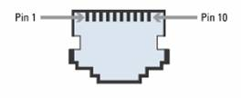
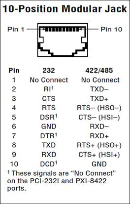
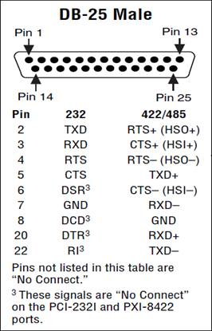
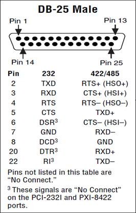
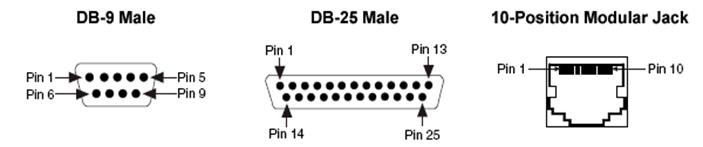
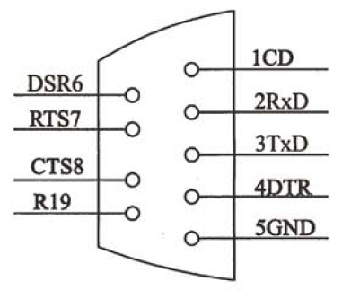

| Simpole® |
|
|---|
PCI8432 I/O板卡是NI公司生产的串行通信板卡之一，本节依据NI公司相关资料，结合在Simpole中的应用，介绍板卡硬件相关内容，包括板卡的组件、I/O口映射关系及板卡电气特性等。
具体内容如下：
PCI8432板卡是一个支持RS232的串行通信板卡。
PCI8432板卡与外部设备通过连接器RJ50（10-position jack）实现连接，连接器RJ50（10-position jack）外形图如下图所示。
连接器RJ50（10-position jack）的引脚定义如下表所示。

NI公司匹配的通信电缆（非隔离）可以把连接器RJ50（10-position jack）转换成标准连接器DB-9或者DB-25。DB-9和DB-25连接器的引脚定义图分别如下图所示。
 

DB-9、DB-25和10-position jack连接器引脚对应关系如下表所示。
| DB-9 Male | DB-25 Male | 10-Position Modular Jack | ||||||
|---|---|---|---|---|---|---|---|---|
| Pin | EIA-232 | EIA-485/422 | Pin | EIA-232 | EIA-485/422 | Pin | EIA-232 | EIA-485/422 |
| 1 | DCD | GND | 2 | TXD | RTS+(HSO+) | 1 | No Connect | No Connect |
| 2 | RXD | CTS+(HSI+) | 3 | RXD | CTS+(HSI+) | 2 | RI | TXD- |
| 3 | TXD | RTS+(HSO+) | 4 | RTS | RTS-(HSO-) | 3 | CTS | TXD+ |
| 4 | DTR | RXD+ | 5 | CTS | TXD+ | 4 | RTS | RTS-(HSO-) |
| 5 | GND | RXD- | 6 | DSR | CTS-(HSI-) | 5 | DSR | CTS-(HSI-) |
| 6 | DSR | CTS-(HSI-) | 7 | GND | RXD- | 6 | GND | RXD- |
| 7 | RTS | RTS-(HSO-) | 8 | DCD | GND | 7 | DTR | RXD+ |
| 8 | CTS | TXD+ | 20 | DTR | RXD+ | 8 | TXD | RTS+(HSO+) |
| 9 | RI | TXD- | 22 | RI | TXD- | 9 | RXD | CTS+(HSI+) |
| - | - | - | - | - | - | 10 | DCD | GND |
通常，微机系统以+5V代表逻辑“1”，而接地电压代表逻辑"0"，输出经RS232接口内的运算放大器改变±12V的振幅电压，再由电线传送到接收端。因为数据信号规定负逻辑，整体来说，两者的逻辑一致，TTL标准与RS232标准之间的电平转换电路利用集成芯片RS232实现。一般常见到的RS232接口接头大都以D型25引脚的连接器（DB-25）与外界连接。实际应用中，并不是每只引脚信号都必须用到，所以IBM公司将其缩减为9线，微机中使用的9芯D型连接器如下图所示。而工业控制的RS-232 口一般只使用RXD、TXD、GND 三条线。 RS232传输最多15米。
|
RS232 SimpoleD Reference |
|
|---|